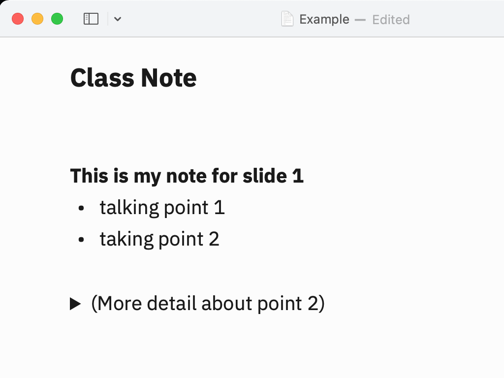
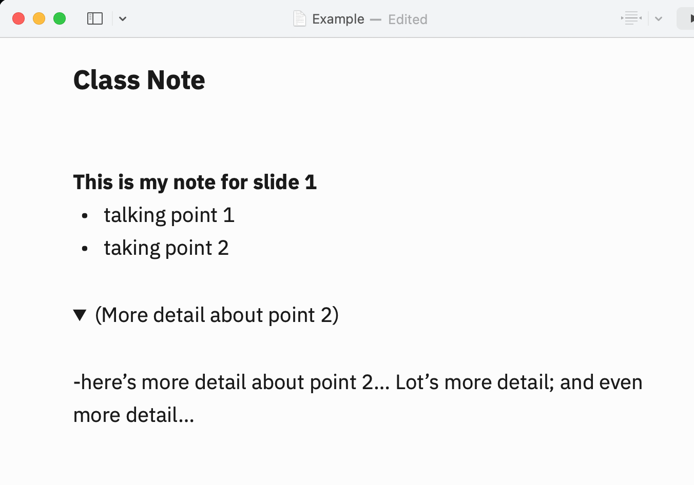
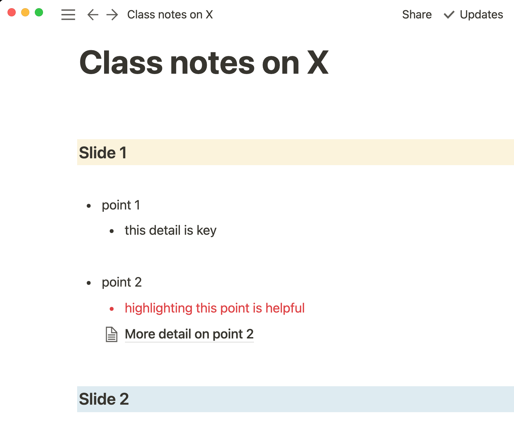
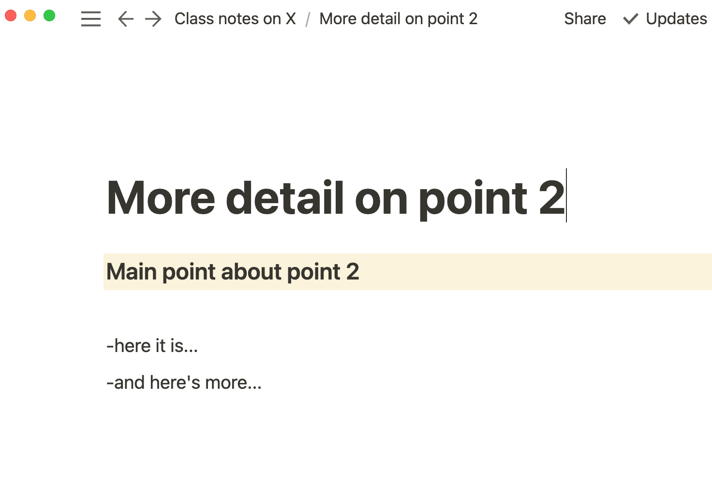

Presenter notes 2.0: make them hypertext with Notability
In class and in the courtroom, I’ve run into what I suspect is a common issue: wanting to have a set of notes for a presentation (a class on X topic, oral submissions on a legal issue) to be both comprehensive but concise. I want all my speaking points briefly set out under headings (my script), but I also want to include a lot of information on certain points (my detailed notes) to help me prepare for the class or in case I need them in the course of my submissions.
The conundrum
Until recently, the problem was that you couldn’t easily have both without making a compromise. Either the notes got too cluttered with detail and thus hard to read at a glance when speaking, or they weren’t detailed enough.
I took one step toward a solution in my teaching recently by migrating away from using the “presenter notes” in PowerPoint to using a stand-alone file in iA Writer on my iPad instead. That felt like a huge improvement, because now my notes for each slide could be as long as I wanted, but they also made use of a neat feature in markdown: the “details” tag, which allows you to have your cake and eat it too. You can have all the detail there if you need it, but keep it hidden until you do:


Notion takes it further
I’ve been using ia.Writer for much of the past year, but I recently discovered Notion. Notion does many cool things, but it takes the idea of nested notes to the next level.
It has not only something similar to the toggle feature for hiding longer notes on the same page, but it can also easily turn a word, a line, or a heading into a link to another page, which can be then be set up like a discrete set of notes with its own set of links:


Notion made me think about a set of speaking notes not as a document but as a hypertext. And this is a far better tool for the purpose.
As you can see, Notion has other benefits, including use of different coloured backgrounds to highlight words and headings. But the nested pages feature makes more it powerful than ia.Writer for the purpose I have in mind.
Testing this in court
I haven’t road tested Notion yet in my classes, but I did use it for my submissions last week at the BC Court of Appeal, and it worked well. I argued two issues, and so I created a top-level page that functioned like a table of contents, with simply: issue 1 and issue 2 linked to the notes for those pages. On each page, I had my main points listed under a series of headings, and I kept all of my more detailed notes about each of the precedent cases we might refer to off in sub-pages, making the name of the case a hyperlink in my main set of notes.
At one point in the appeal, one of the judges asked me about one of the Crown’s cases. I simply scrolled up to that case, clicked on it and saw my brief note about it and gave a reply. It felt great to know precisely where to find it — and not to have the main set of notes cluttered with detail.
Still pondering how best to use Notion for lecture notes, but it looks promising.